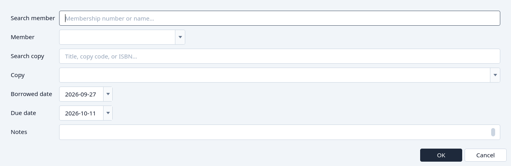
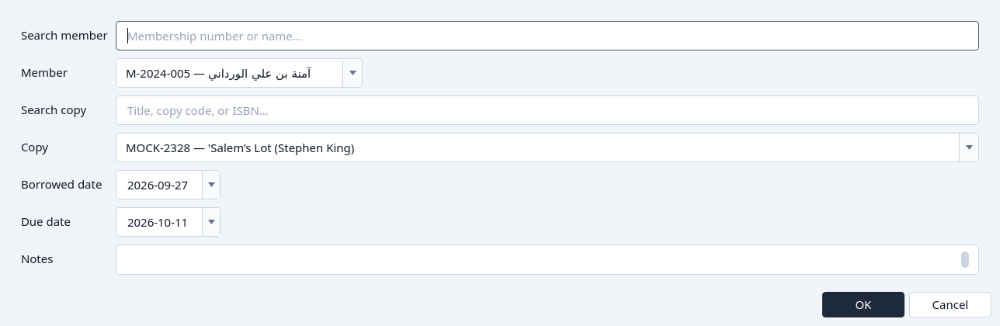
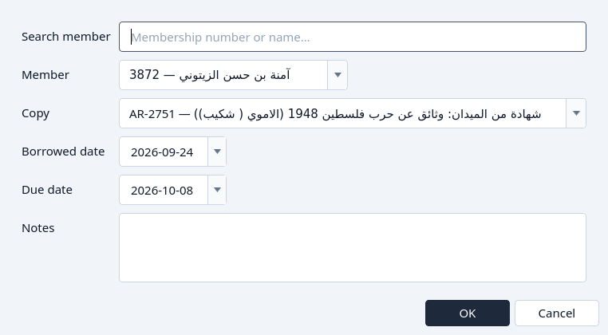
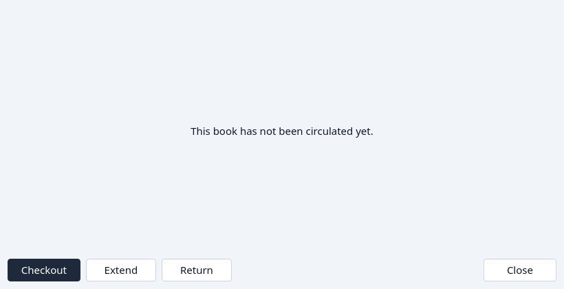
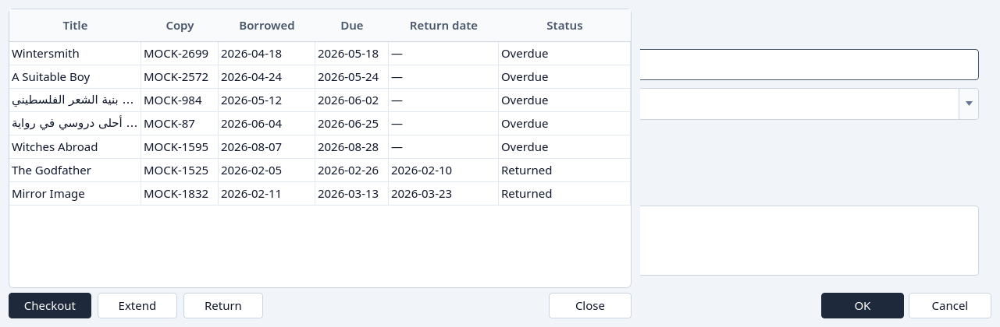

Lend a book
Check a copy out from Circulation, from a title, or from a member.
Only an Active member is offered, and only a copy that is on the shelf. The due day starts at 14 days after the day the copy goes out. You can change it before OK. See Member status and Loan states.
From Circulation
Click Checkout.
The dialog asks for a member and a copy. Search either list if it is long.

Checkout, before a member and a copy are chosen. Choose the member and the copy, then OK.

A member and a copy chosen. Cancel leaves Circulation unchanged.


From a book's loans
On the Catalogue, highlight the title and click Loans. Checkout is there even when the title has never been borrowed. The copy list is only that title's copies, and there is no copy search.
Click Checkout in the loans dialog.

Checkout from a title. The copy list is that title alone.



Choose the member, confirm the copy, and click OK. Close leaves the history.
From a member's loans
On Members, highlight the member and click Loans, then Checkout. The member is shown as a name, not a search. You choose the copy.


What if…
- No copy of that title is on the shelf. The copy list says so, and OK stays unavailable.
- The member is Not active. They are not in the member list. Renew them first. See Register a member.
- The due day is before the day the copy goes out. The dialog refuses it.